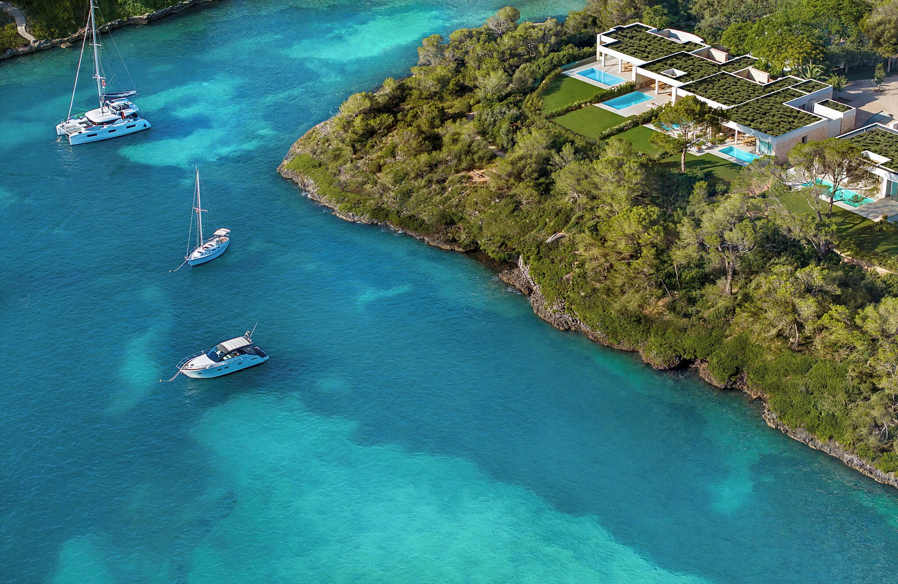
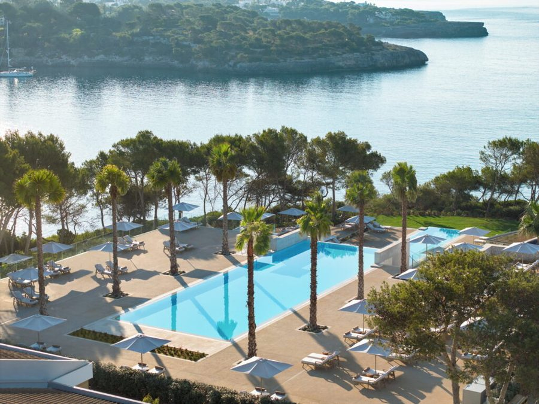
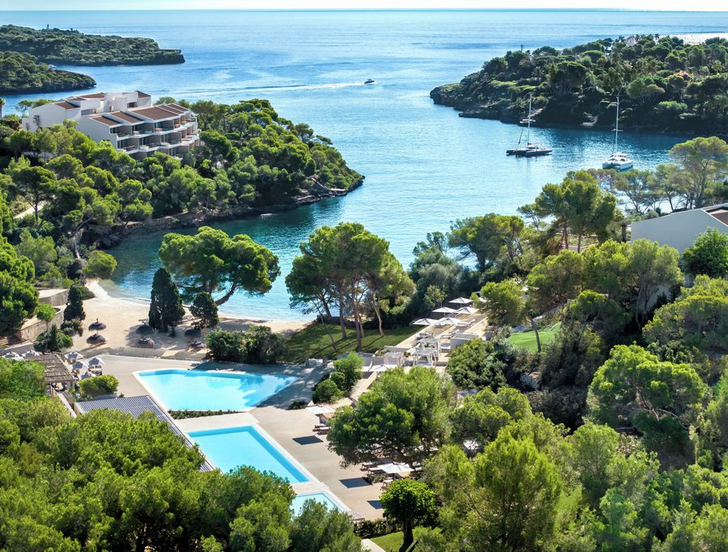
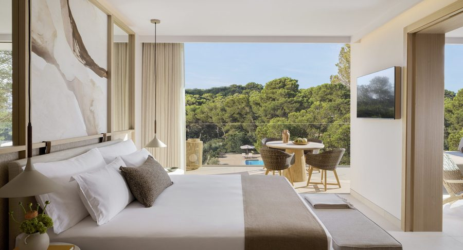
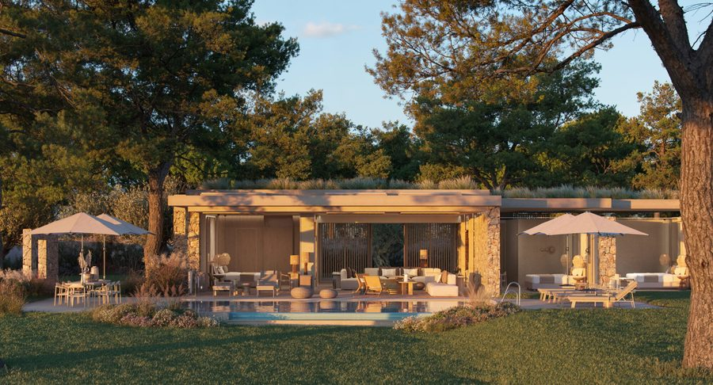

Vakantieweercijfer
8,5/10
Een zonnige Mediterrane week op Mallorca’s zuidkust — lange dagen, zachte avonden, glinsterend turkoois water tussen twee baaien.
A Majestic Mallorcan Sanctuary

Ikos Porto Petro · tussen twee baaien
seis días · tussen twee zandige baaien
Tik op een dag voor details & activiteiten
Het Domein
het resort in beeld
Ikos Porto Petro · overview

Deluxe Pool

Beach Club

One Bedroom Suite

Deluxe Villa